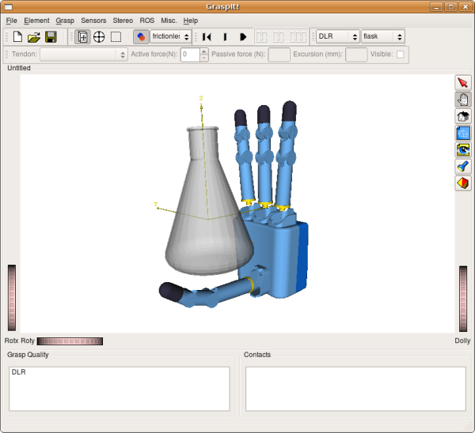
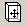
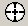

Contents
| | | 3 Getting Started | Contents |
To get started, use the File -> Open menu, and load the simulation world file dlr_flask.wld. Note that by default GraspIt! will look for world files in $GRASPIT/worlds. This is a very simple simulation world containing nothing except a hand (the DLR model) and an object (a flask).
In general, you can also start with an empty simulation world and populate it by importing robots and objects, one at a time, using the Import options in the File menu. You can then save a simulation world into a world file, like the one that we just opened. In this quick tutorial, we will be using a couple of simulation worlds supplied with the distribution.
The most part of the GraspIt! main window is occupied by the Inventor viewer, which renders the virtual world. On the right side there is a vertical toolbar: this is the Inventor toolbar which is responsible for camera interaction.
The first two buttons on the Inventor toolbar determine which state the viewer is in. When is selected, the viewer is in Interaction mode. This is the only mode in which you can interact with the objects in the simulation world. When is selected, the viewer is in Camera mode. This is the only mode in which you can move the camera.
You can also toggle between Interaction mode and Camera mode by pressing the <ESC> or <ALT> keys, although this seems not to work on all systems.
When the viewer is in Camera mode, you can move the virtual camera in the following ways:
In addition, the following buttons on the Inventor toolbar are useful:
Take a moment to move the camera around and familiarize yourself with its controls.
When the viewer is in Interaction mode, you can interact with the objects in the scene. The type of interaction is determined by the following button in the GraspIt! toolbar:   :
Clicking on a kinematic chain causes joint draggers to be drawn for each DOF on that chain. You can then use these draggers to move the joints of the robot.
Try to use the tool to flex the fingers of the robot. Note that once a finger touches the object, a contact is marked and no more flexion is allowed. The same behavior applies for moving objects or robots around.
The following buttons in the GraspIt! toolbar apply to the currently selected body (if any):
Try to disable collisions for the entire simulation world. Note that now you can move objects or flex fingers freely, even if that results in a collisions. Make sure you move all objects out of collisions before you re-enable collision checking; otherwise, you will not be able to move them around.
You can also create one or more contacts between the hand and the object. Once you have a contact, select one of the bodies in contact (such as the robot link that is touching the flask, or the flask itself) and change its material. Notice how the friction cone that marks the contact changes as well.
Start by loading the simulation world dlr_flask.wld again, to make sure all the world elements are in their original positions. The use the menu Grasp -> Auto Grasp. This will cause all the fingers of the robot to flex (more details can be found in the robot configuration file) until contact with the flask prevents all further motion. You now have a grasp.
Use the Grasp -> Quality Measures... menu to create a new quality measure that will be used on this grasp. By default, the quality measure dialog that appears will create a new quality measure called New Quality Measure of the Epsilon type using an L1 Grasp Wrench Space. Click Add/Edit, and then click OK. The new quality measure, along with its value, will be displayed in the lower left part of the GraspIt! main window.
You can also create a projection of the Grasp Wrench Space for this grasp. Use the Grasp -> Create GWS Projection menu. Then click the three checkboxes marked tx, ty and tz and click OK. GraspIt! will display the space of forces that this grasp can apply without a net torque. Note that if you change the camera in the main GraspIt! viewer, the camera that shows the GWS projection moves as well. The axes of the GWS projection are always aligned with the axes of the main viewer.
Start by loading the simulation world barrettGlassDyn.wld. Then, start the dynamics engine by pressing the button on the Dynamics toolbar. Note that the robot joints move slightly and the glass slowly rolls on the table. The PD controllers in the robot joints are simply maintaining the current position against gravity.
Use the Grasp -> Auto Grasp menu to close the fingers of the hand. Note that the hand starts closing, then lifts the glass into its grasp. After the grasp stabilizes, select the glass and change its material properties to frictionless. The glass then slips out of the grasp and ends up rolling off the table. You can pause the dynamics engine at any time by clicking the pause button in the dynamics toolbar.
Here is a subset of the functionality in the menus (I hope to update this section soon):
Copyright (C) 2002-2009 Columbia University
| | | 3 Getting Started | Contents |